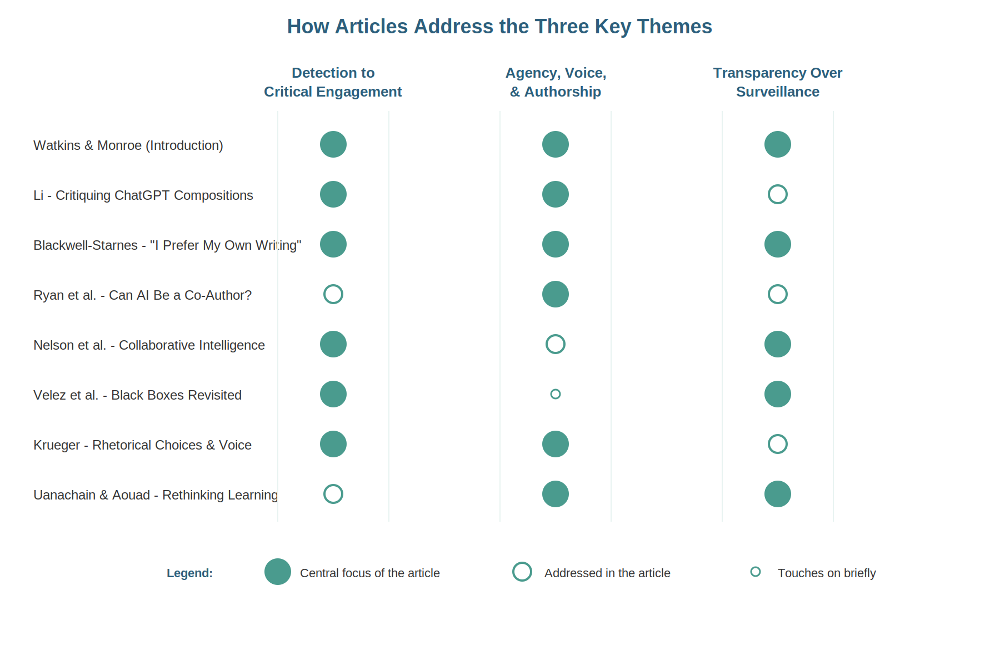

About the Issue
Journal Context
Thresholds is an academic journal dedicated to educational research and practice. This special issue brings together eight articles examining generative AI in writing and composition classrooms, representing diverse perspectives from composition, rhetoric, writing studies, and educational technology.
Guest Editors: Marc Watkins & Stephen Monroe (University of Mississippi)
The issue represents a critical intervention in ongoing conversations about AI in education—moving beyond polarized debates to offer pragmatic, evidence-based approaches grounded in actual classroom experiences.
The Moment: Why This Issue Now?
The ChatGPT Disruption
In November 2022, OpenAI's public launch of ChatGPT fundamentally disrupted higher education. Seemingly overnight, faculty found themselves facing what the editors describe as "a giant public experiment no one asked for."
Key characteristics of this moment:
- Widespread student use of generative AI tools without institutional guidance or support
- Competing narratives: complete resistance versus enthusiastic adoption
- Faculty left to navigate pedagogical challenges without adequate training or resources
- Urgent need for evidence-based approaches rather than speculation
This issue's intervention: Rather than choosing sides in the resistance-versus-adoption debate, this collection stakes out a pragmatic, exploratory middle ground. The articles acknowledge both the remarkable capabilities of generative AI and its significant limitations.
Editors' Framing: At a Pedagogical Crossroads
Watkins and Monroe frame generative AI as an unavoidable reality requiring thoughtful engagement rather than resistance or uncritical adoption. They emphasize collaboration and adaptation as the path toward finding an equilibrium that works for both teachers and students, positioning educators not as victims of disruption but as uniquely positioned to guide students toward critical engagement with these tools.
What These Articles Examine
The eight articles offer practical, evidence-based approaches addressing key challenges: collaborative annotation methods, student agency and voice, authorship boundaries, frameworks for human-AI collaboration, AI as assessment tool, rhetorical decision-making, rethinking learning paradigms, and understanding AI limitations. Together, they demonstrate that students make thoughtful choices about AI use when provided appropriate frameworks and guidance.

A Textual Analysis: What Language Dominates This Conversation?
To understand the linguistic landscape of this special issue, we conducted a corpus analysis using Voyant Tools, a web-based text analysis platform. The analysis reveals the central preoccupations of these scholarly conversations about generative AI in writing instruction.

The most frequently occurring words paint a clear picture of the issue's focus. Unsurprisingly, "AI" appears most often (777 times), followed closely by "students" (766 occurrences) and "writing" (505 occurrences). The prominence of "ChatGPT" (273 times) reflects the catalyst for this moment of pedagogical reckoning, while the high frequency of both "student" (245) and "students" underscores the issue's consistent centering of learner experiences and agency.
Methodology: The corpus was prepared by extracting text from the complete PDF of the special issue, with 27 pages removed to focus the analysis on substantive content. Excluded pages included the cover, copyright page, table of contents, contributor biographies, and pages containing only references. The resulting corpus was analyzed using Voyant Tools' default stopword list to filter common function words and reveal the specialized vocabulary of this scholarly conversation.
Together, these articles demonstrate that students can and do make ethical, thoughtful choices about AI use when provided with appropriate frameworks, guidance, and opportunities for critical engagement.